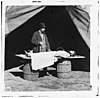

embalming

Definition: Embalming is the art and science of preserving human remains by treating them (in its modern form with chemicals) to forestall decomposition. This is usually done to make the deceased suitable for viewing as part of the funeral ceremony or keep them preserved for medical purposes in an anatomical laboratory. The three goals of embalming are sanitization, presentation, and preservation, with restoration being an important additional factor in some instances. Performed successfully, embalming can help preserve the body for many years. Embalming has a very long and cross-cultural history, with many cultures giving the embalming processes religious meaning.
Source: Wikipedia
Wikipedia Page (Something wrong with this association? Let us know.)
Wikidata Page (Something wrong with this association? Let us know.)